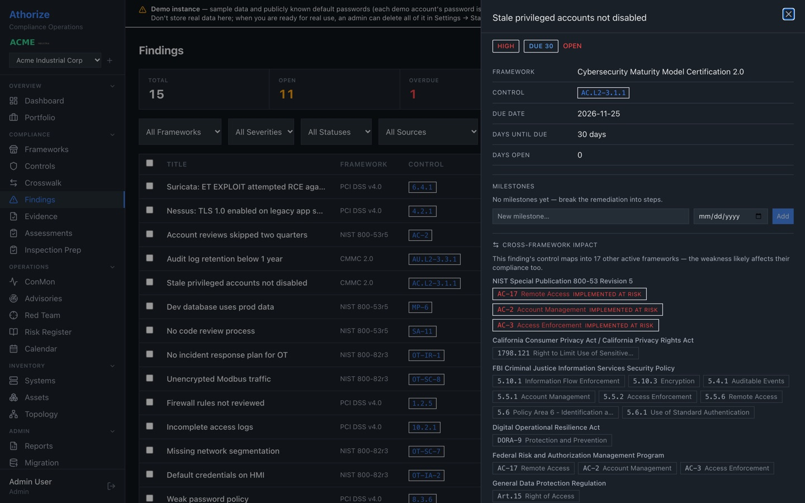
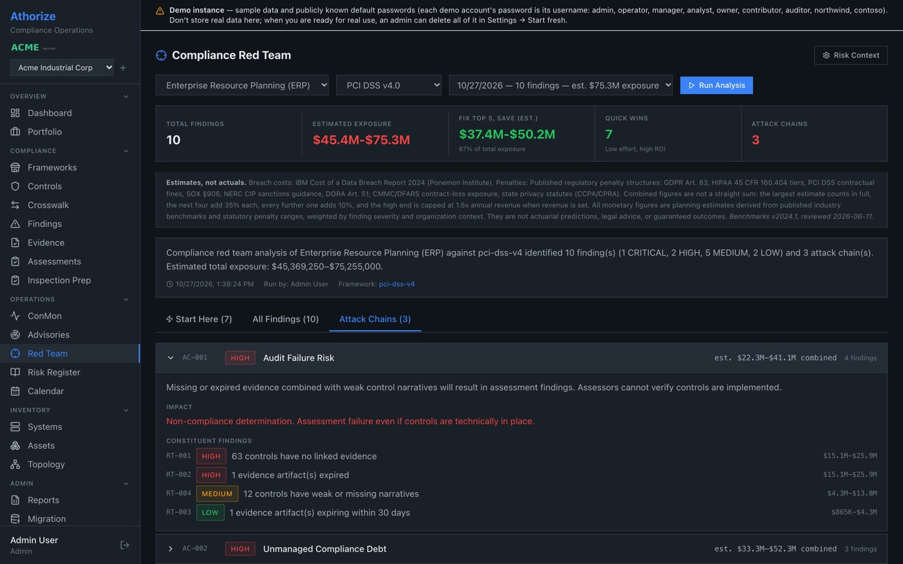
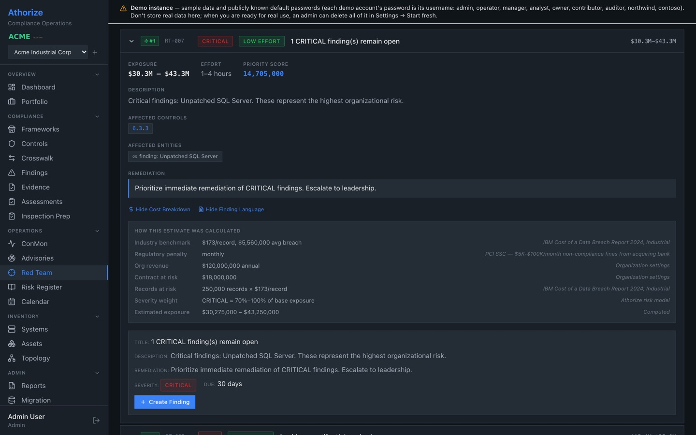
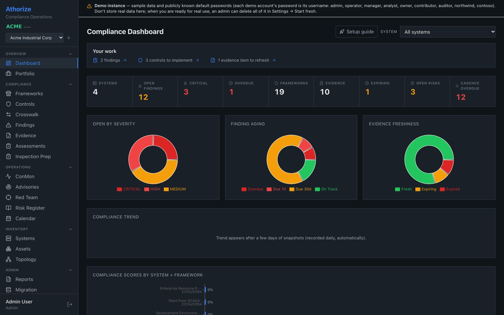
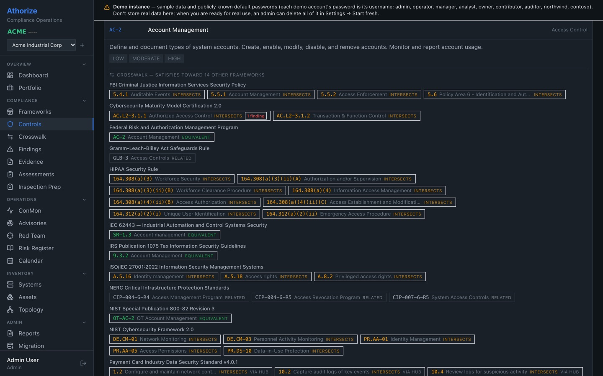
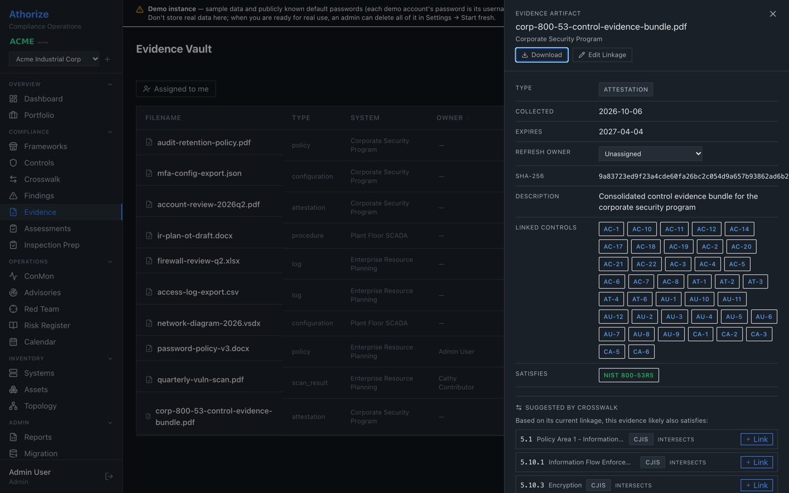
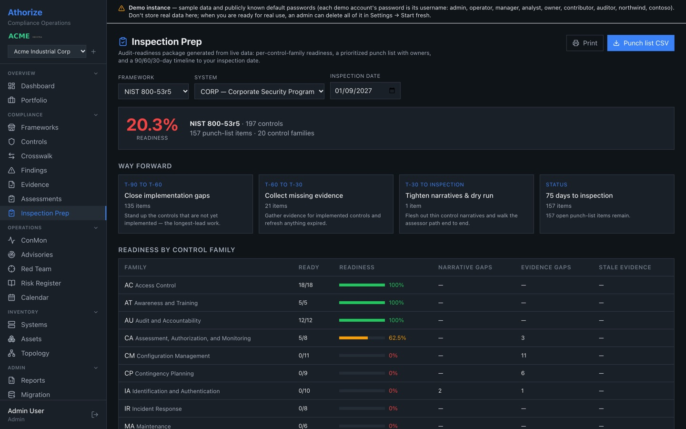
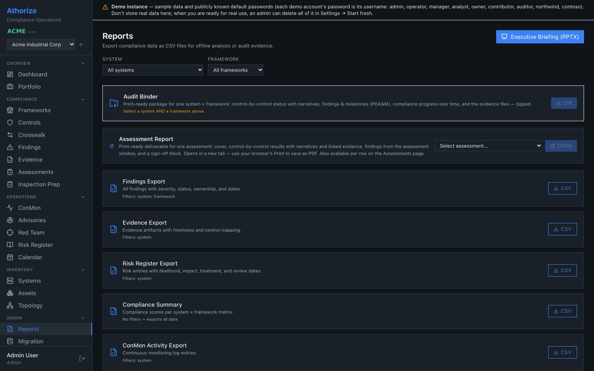
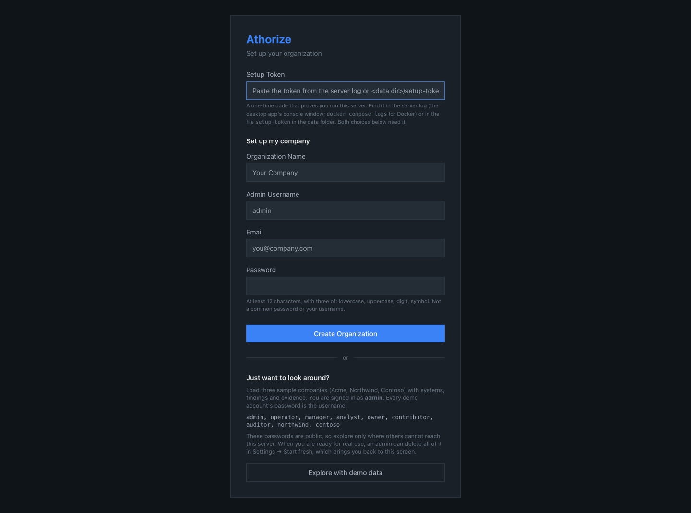

Free · Open source (AGPL-3.0) · Self-hosted
Compliance operations for teams that answer to more than one framework.
Athorize is a free, open-source compliance platform that runs on your own server or laptop. Track controls, evidence, findings and audits across 18 frameworks in one place. The crosswalk links them, so fixing a finding or uploading one piece of evidence shows up everywhere it legitimately counts. A built-in compliance red team reviews your program the way a hostile assessor would and estimates what each gap could cost.
- Version
- 1.0
- Frameworks
- 18
- Controls
- 1,077
- Crosswalk links
- 3,494
- License
- AGPL-3.0
- Runs on
- Docker · Linux · Windows (beta)
Crosswalk — satisfies toward 14 other frameworks
- FedRAMPAC-2Account ManagementEquivalent
- IRS Pub 10759.3.2Account ManagementEquivalent
- NIST 800-82r3OT-AC-2OT Account ManagementEquivalent
- IEC 62443SR-1.3Account managementEquivalent
- CMMC 2.0AC.L2-3.1.1Authorized Access ControlIntersects
- CJIS5.5.1Account ManagementIntersects
- HIPAA Security164.308(a)(4)Information Access ManagementIntersects
- ISO/IEC 27001A.5.16Identity managementIntersects
- NIST CSF 2.0PR.AA-01Identity ManagementIntersects
- NERC CIPCIP-004-6-R4Access Management ProgramRelated
- GLBAGLB-3Access ControlsRelated
Implement once, comply many.
Every framework in Athorize is linked through NIST SP 800-53, mostly using NIST's own published mappings. That gives 3,494 control-to-control links routed through one hub, so work done once counts everywhere it applies.
- Each control shows what it also satisfies.
Open a control and its crosswalk lists the matching controls in every active framework, marked equivalent, intersects or related.
- A finding shows every framework it affects.
In the demo, one CMMC finding about stale privileged accounts maps into 17 other active frameworks.
- Evidence counts where it applies.
Upload an artifact, link it to the controls it satisfies, and the crosswalk suggests where the same evidence applies in other frameworks.
- Nothing changes silently.
A review queue proposes status changes and never applies them on its own. Editorial mappings are hints for navigation and evidence only; they never carry a compliance status across.


Red-team your compliance program before an assessor does.
Pick a system and a framework and run an analysis. The Compliance Red Team reads your own controls, evidence, findings, assessments and deadlines the way a hostile assessor would, and reports each weakness it finds with remediation guidance, tied to the framework's controls where it applies. It tests the compliance program, not your network.
- Seven checks, one report.
Controls with no linked evidence, expired or expiring evidence, weak or missing narratives, controls with no implementation record, failed or partial controls, overdue findings and findings without a remediation plan, missing assessments, and past-due deadlines and reviews.
- Attack chains.
Related weaknesses are linked into compound failures: Audit Failure Risk (missing evidence plus weak narratives), Unmanaged Compliance Debt and Assessment Program Failure, each with its impact and a combined estimate.
- Exposure in dollars, with sources.
Each weakness gets a low–high range built from the IBM/Ponemon 2024 breach-cost benchmarks, the framework's published penalty or contract-loss exposure, and your own revenue, contract and record figures, with every source cited. These are planning estimates, not predictions or legal advice.
- From weakness to finding to briefing.
Each weakness carries pre-filled finding language; one click files it as a tracked finding. A Start Here tab lists the low-effort fixes by return on investment, and the exposure totals feed the executive briefing.




18 frameworks, 1,077 controls, one crosswalk.
Turn on the ones you need. Every bundled framework activates freely, and you can build your own with the Framework Builder. Each catalog and mapping is listed with its source in FRAMEWORK_SOURCES.md.
| Framework | Control text | Mapping to 800-53 |
|---|---|---|
| NIST | ||
| NIST SP 800-53 Rev 5 | Official publication | Crosswalk hub |
| NIST SP 800-82 Rev 3 (OT overlay) | Official publication, OT-tailored | Identity (800-53 selection) |
| NIST CSF 2.0 | From or based on the official publication | NIST OLIR #186 |
| U.S. federal and state programs | ||
| FedRAMP | 800-53 control text, as selected by FedRAMP | Identity (800-53 selection) |
| StateRAMP | 800-53-based control text | Identity (800-53 selection) |
| CMMC 2.0 | NIST SP 800-171 requirement text | SP 800-171r2 Appendix D |
| IRS Publication 1075 | From or based on the official publication | Identity (800-53 selection) |
| CJIS Security Policy | From or based on the official publication | FBI CJIS control mapping |
| Industry and industrial standards | ||
| ISO/IEC 27001:2022 * | Original plain-language summaries | NIST OLIR #155 |
| PCI DSS v4 * | Original titles and summaries | OLIR #183, via CSF 2.0 |
| IEC 62443 * | Original summaries, guidance and assessment objectives | Editorial, informed by SP 800-82r3 |
| NERC CIP * | Original plain-language summaries | Editorial (advisory) |
| Privacy, health and financial regulation | ||
| HIPAA Security Rule | 45 CFR Part 164 | NIST OLIR #110 |
| GLBA Safeguards Rule | Summaries of 16 CFR Part 314 | Editorial (advisory) |
| SOX (IT general controls) | Original control statements written for Athorize | Editorial (advisory) |
| GDPR | Regulation (EU) 2016/679 | Editorial (advisory) |
| CCPA / CPRA | California Civil Code | Editorial (advisory) |
| DORA | Regulation (EU) 2022/2554 | Editorial (advisory) |
Green: published government mappings or identity mappings (these frameworks are 800-53 control selections). Amber: Athorize editorial mappings, used where no official crosswalk exists; they never propagate a compliance status automatically.
The whole compliance loop, in one place.
From the control narrative to the audit binder: what Athorize tracks, and what it hands you at the end.
- Controlsper system
- Record implementation status and a narrative for each control, per system, with the crosswalk alongside.
- Evidencefreshness + expiry
- Upload artifacts, link them to the controls they satisfy, and see what is fresh, expiring or expired.
- Findings and POA&Mowners + due dates
- Track weaknesses from open to closed with owners, due dates, milestones, comments and @mentions, saved views and bulk edits.
- Continuous monitoringConMon + calendar
- Set a cadence per framework and see what is due and what is stale. The calendar pulls in every deadline: finding due dates, milestones, evidence expiries, assessments and cadences.
- Inspection Prepaudit readiness
- A readiness score with a punch list and a 90/60/30 timeline before an audit.
- Assessments and reportsbinders + briefing
- Per-assessment reports, audit binders, CSV exports and an 8-slide executive briefing in PowerPoint.
- Imports17 finding formats
- Splunk, Microsoft Sentinel, CrowdStrike, Elastic, Wazuh, GuardDuty, Suricata, Snort, YARA, CEF, syslog and Windows Event Log, plus Nessus (CSV and native
.nessus), Qualys, Tenable and OpenVAS scan results. Asset inventories and POA&M/SSP spreadsheets import too. - Threat advisoriesopt-in live feeds
- CISA KEV, NVD, CISA advisories and vendor CSAF feeds, matched to your IT and OT assets and the controls they touch. Live feeds are off until you turn them on; offline installs and the demo use bundled sample advisories about fictional vendors, labelled Sample.
- Compliance Red Teamexposure in dollars
- A hostile-assessor review of each system's compliance data, with attack chains and estimated dollar exposure from cited benchmarks. See §2.
- Teams and accesssix roles
- Admin, compliance manager, assessor, system owner, evidence contributor and auditor; per-system access, OIDC single sign-on, API tokens, a tamper-evident (hash-chained) audit log, and backup and restore.
See it before you install it.
The main screens, from the built-in demo: the dashboard, a control's crosswalk, a finding's cross-framework impact, evidence, inspection readiness and reports.
All data shown is the built-in demo (fictional companies Acme, Northwind and Contoso). Select any screenshot for full size.












Try it in one command.
You need Docker with the Compose plugin (Docker Desktop on macOS or Windows). Clone the repository and start the demo instance:
git clone https://github.com/djctwo/athorize.git && cd athorize docker compose -f docker-compose.demo.yml up -d
Then open http://localhost:8002 and log in as admin / admin. The first run builds the image from source. The demo is published on 127.0.0.1 only and its passwords are public, so never put real data in it or expose it to a network.
Your own instance
Docker Recommended
A blank instance that opens on the Setup screen. Data lives in a Docker volume and survives restarts and upgrades. Pre-built images for each release (amd64 and arm64) are at ghcr.io/djctwo/athorize.
docker compose up -d docker compose logs athorize | grep "SETUP TOKEN"
Open http://localhost:8001 and enter the one-time setup token. Docker guide
Linux server
For a team server: the app as a system service behind nginx with TLS. An offline install path is included for networks without internet access.
Follow INSTALL.md, then the Administrator Quickstart.
Windows Beta
Download Athorize.exe, or Athorize-Demo.exe pre-loaded with demo data, and double-click it; your browser opens to the app. For trying Athorize on one computer; for a team server, use Docker or Linux.
The .exe is not code-signed, so SmartScreen shows “unknown publisher”: choose More info → Run anyway. Releases
Settings, team access behind a TLS proxy, backups and upgrades are covered in docs/INSTALL.md. The app is built for desktop browsers (1280 px wide or more).
Your server, your data.
Athorize runs on your server, VM or laptop. There is no cloud component, and your compliance data never leaves the machine it runs on.
- You own it. The database, the evidence files and the backups are yours, in one data directory or Docker volume.
- No telemetry. Nothing in Athorize phones home.
- Works offline. Nothing in the running app needs the internet. Framework catalogs and mappings ship as local files.
- Offline install. A release can be built with every Python dependency bundled, for servers on disconnected networks.
- Opt-in feeds only. Live threat feeds are off until you turn them on, and then contact only CISA, NVD and the vendor hosts you list.
- Encrypted backups. In-app backups archive the database and all evidence files, optionally passphrase-encrypted.
A note on framework text
ISO/IEC 27001, PCI DSS, IEC 62443 and NERC CIP are copyrighted by their publishers, and Athorize does not include their text. For these four it ships control and requirement IDs, short titles, and its own plain-language summaries. To work against the authoritative wording, buy the standard from its publisher and use the summaries as a guide to it.
The other catalogs come from public-domain U.S. government publications, regulations and statutes, or EU legislation (source: EUR-Lex); SOX IT general controls are original statements written for Athorize. Details for every framework: FRAMEWORK_SOURCES.md.
Framework names are trademarks of their owners; Athorize is not affiliated with or endorsed by any standards body. Athorize helps you organize compliance work; it does not certify compliance.
Free software, every feature included.
Athorize is released under the GNU Affero General Public License v3.0. No license keys, no locked features, nothing held back.
- Use, study, modify and share it freely, for any purpose.
- Share your changes. If you run a modified version for others, including over a network, you must make your source available to them under the same license.
- Report bugs and ideas as GitHub issues. Never paste real compliance data, system names or credentials into one.
- Report vulnerabilities privately through the repository's private vulnerability reporting, not a public issue.
Built with FastAPI, SQLAlchemy, SQLite (PostgreSQL supported), React 18, TypeScript, Vite, Tailwind, TanStack Query and Recharts. Provided without warranty.